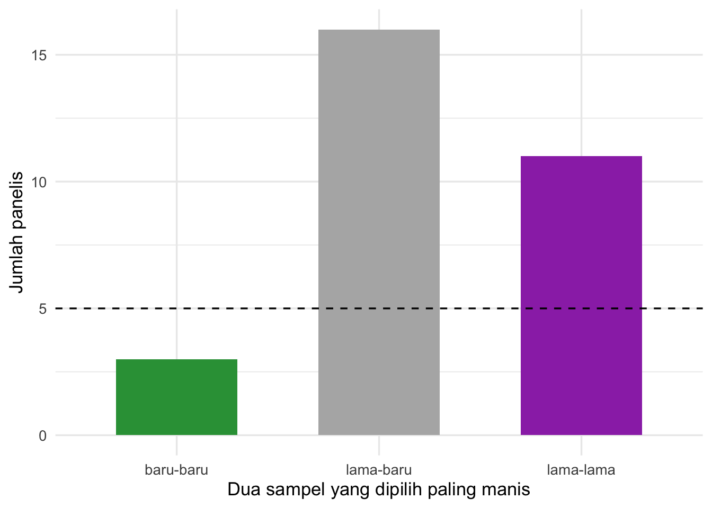

choose(4, 2)[1] 6Gula semut dari pemasok baru — apakah kemanisannya sama?
Sebuah produsen minuman di Yogyakarta memakai gula semut (gula kelapa kristal) untuk tiga produknya: teh, kopi, dan wedang jahe. Pemasok lama tidak sanggup lagi memenuhi pesanan, jadi perusahaan ingin beralih ke pemasok baru dari Kulon Progo yang harganya lebih murah.
Syaratnya: kemanisan ketiga produk tidak boleh berubah, baik menjadi lebih manis maupun kurang manis. Atribut lain (warna, aroma karamel) sudah dicek oleh tim QC dan dianggap setara.
Tujuan uji: menentukan apakah konsumen merasakan perbedaan kemanisan antara minuman yang dibuat dengan gula semut pemasok lama dan pemasok baru, untuk setiap jenis minuman.
Kasus ini mengikuti Contoh 8.3 di Meilgaard dkk.
Ada 6 cara memilih 2 dari 4 sampel:
Dari 6 kemungkinan itu, hanya 1 yang berisi kedua sampel lama (A-A), dan hanya 1 yang berisi kedua sampel baru (B-B). Empat sisanya adalah pasangan campuran (A-B). Jika panelis hanya menebak:
| Jenis pilihan | Arti | Peluang menebak |
|---|---|---|
| lama-lama | gula lama terasa lebih manis | 1/6 |
| baru-baru | gula baru terasa lebih manis | 1/6 |
| lama-baru | panelis tidak menangkap perbedaan | 4/6 |
Pada tetrad biasa, panelis cukup mengelompokkan sampel, jadi peluang menebaknya 1/3. Pada specified tetrad, panelis harus menunjuk arah perbedaan (mana yang lebih manis). Peluang menebaknya lebih kecil (1/6), dan kita tahu sampel mana yang lebih manis.
Perusahaan tidak ingin kemanisan berubah ke arah mana pun. Jadi ada dua kemungkinan kegagalan: gula lama lebih manis, atau gula baru lebih manis. Makanya tes ini menggunakan uji two-sided.
| Kolom | Arti |
|---|---|
produk |
jenis minuman: teh, kopi, wedang |
panelis |
kode panelis |
urutan |
urutan penyajian (A = pemasok lama, B = pemasok baru) |
kode_lama, kode_baru |
kode 3 digit sampel A dan B |
urutan_kode |
kode sampel dari kiri ke kanan di nampan |
pilihan_paling_manis |
dua kode yang dipilih panelis |
jenis_pilihan |
jenis sampel yang dipilih: lama-lama, baru-baru, atau lama-baru |
Kita mulai dengan teh.
Desain seimbang (masing-masing 5) ✔️
total lama_lama baru_baru
30 11 3 Jika panelis hanya menebak, kita berharap sekitar 30 × 1/6 = 5 panelis untuk setiap arah.
findcr()Fungsi findcr() dari library sensR memberi jumlah minimum jawaban agar hasilnya signifikan. Karena uji two-sided, kita pakai α/2 = 0,025 untuk setiap arah.
Artinya, jika 10 atau lebih dari 30 panelis memilih arah yang sama, perbedaan kemanisannya signifikan.
binom.test()uji_lama <- binom.test(n_lamalama, n_total, p = 1/6, alternative = "greater")
uji_baru <- binom.test(n_barubaru, n_total, p = 1/6, alternative = "greater")
data.frame(arah = c("gula lama lebih manis", "gula baru lebih manis"),
jumlah = c(n_lamalama, n_barubaru),
p_value = round(c(uji_lama$p.value, uji_baru$p.value), 4),
signifikan = c(uji_lama$p.value, uji_baru$p.value) < 0.025)Bandingkan nilai p dengan 0,025 (bukan 0,05), karena kita menguji dua arah.
Proporsi pemilih lama-lama yang teramati adalah pc = 11/30. Sebagian dari mereka hanya beruntung menebak. Fungsi pc2pd() mengoreksi tebakan itu dan memberi pd, yaitu perkiraan proporsi konsumen yang benar-benar merasakan gula lama lebih manis.
teh %>%
count(jenis_pilihan) %>%
ggplot(aes(x = jenis_pilihan, y = n, fill = jenis_pilihan)) +
geom_col(width = 0.6, show.legend = FALSE) +
geom_hline(yintercept = n_total / 6, linetype = "dashed") +
scale_fill_manual(values = c("baru-baru" = "#2f9e44",
"lama-baru" = "grey70",
"lama-lama" = "#9c36b5")) +
labs(x = "Dua sampel yang dipilih paling manis", y = "Jumlah panelis") +
theme_minimal(base_size = 13)
Pada uji specified tetrad dengan 30 konsumen, 11 panelis memilih kedua sampel teh dengan gula pemasok lama sebagai yang paling manis, sedangkan hanya 3 panelis memilih kedua sampel gula baru. Jumlah 11 melebihi nilai kritis 10 (α = 0,05 dua sisi; p = 0,007). Artinya, teh dengan gula pemasok baru terasa nyata kurang manis. Diperkirakan sekitar 24% konsumen merasakan perbedaan ini. Pemasok baru belum dapat dipakai untuk teh tanpa penyesuaian formula.
Ulangi Langkah 1–5 untuk kopi dan wedang jahe.
ringkas <- gula %>%
group_by(produk) %>%
summarise(n = n(),
lama_lama = sum(jenis_pilihan == "lama-lama"),
baru_baru = sum(jenis_pilihan == "baru-baru")) %>%
mutate(kritis = sapply(n, findcr, alpha = 0.025, p0 = 1/6),
p_lama = mapply(function(x, n) binom.test(x, n, 1/6, alternative = "greater")$p.value,
lama_lama, n),
p_baru = mapply(function(x, n) binom.test(x, n, 1/6, alternative = "greater")$p.value,
baru_baru, n),
kesimpulan = ifelse(pmin(p_lama, p_baru) < 0.025, "berbeda", "tidak terbukti berbeda"))
ringkasUntuk produk teh, tim R&D membuat formula baru: gula pemasok baru ditambah 10% agar kemanisannya menyamai formula lama. Mereka yakin formula ini kini lebih manis daripada formula yang memakai gula baru tanpa tambahan, dan hanya ingin membuktikannya.
Uji specified tetrad dengan 36 konsumen: 13 memilih kedua sampel formula tambahan 10% sebagai yang paling manis.
Untuk uji ulang pada wedang jahe, perusahaan ingin peluang 80% untuk menangkap perbedaan jika sebenarnya 25% konsumen merasakan salah satu arah (pd = 0,25). Gunakan α = 0,025 untuk setiap arah.
Petunjuk: fungsi sensR yang namanya diawali discrim dan diakhiri Pwr atau SS. Jangan lupa pGuess = 1/6.
Pada Contoh 8.3 (pengisi untuk pemanis), 24 panelis menguji setiap minuman. Jumlah pilihan “kedua sampel kandidat lebih manis” dan “kedua sampel standar lebih manis” adalah:
| Minuman | Kandidat lebih manis | Standar lebih manis |
|---|---|---|
| Limun | 1 | 5 |
| Teh | 3 | 4 |
| Kopi | 6 | 4 |
findcr(), cari nilai kritis untuk 24 panelis, uji dua sisi, α = 0,05.alpha = 0.05 (tanpa dibagi dua). Diskusikan kemungkinan penyebab perbedaannya.